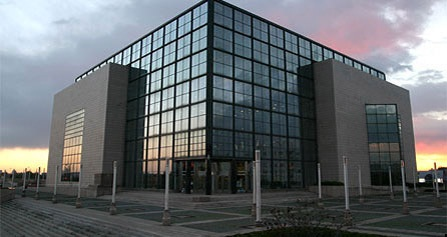

Nacionalna i sveučilišna knjižnica
Kvaliteta. Ponuda. Opremljenost.
-
Osnovana
1607.g. -
Status
Nacionalna i sveučilišna knjižnica u Zagrebu javna je ustanova od nacionalnog značenja koja obavlja knjižničnu i informacijsku djelatnost nacionalne knjižnice Republike Hrvatske i središnje knjižnice Sveučilišta u Zagrebu. -
Uprava
Upravno vijeće broji 9 članova:- Milivoj Zenić, prof., predsjednik, predstavnik Ministarstva kulture
- Slavko Harni, viši knjižničar, zamjenik predsjednika, predstavnik Nacionalne i sveučilišne knjižnice u Zagrebu
- Ružica Vučić, dipl. ing., predstavnica Ministarstva znanosti, obrazovanja i športa
- Marko Petrak, Prof. dr. sc., predstavnik Ministarstva znanosti, obrazovanja i športa
- Ivan Milanović Litre, dipl. teol., predstavnik Ministarstva znanosti, obrazovanja i športa
- Daniela Živković, Prof. dr. sc., knjižničarska savjetnica, predstavnica Ministarstva kulture
- Jozo Ivanović, viši arhivist, predstavnik Ministarstva kulture
- Dragica Krstić, Mr. sc., konzervatorska savjetnica, predstavnica Nacionalne i sveučilišne knjižnice u Zagrebu
- Jelica Leščić, Mr. sc., knjižničarska savjetnica, predstavnica Nacionalne i sveučilišne knjižnice u Zagrebu
-
Glavni ravnatelj
Dunja Seiter-Šverko, prof., v.d. Glavne ravnateljice Nacionalne i sveučilišne knjižnicu u Zagrebu -
Ravnatelji razdjela
Ravnatelj razdjela Nacionalna knjižnica, (nepopunjeno)
Ravnatelj razdjela Sveučilišna knjižnica, (nepopunjeno) -
Osoblje
U Knjižnici je zaposleno ukupno (uključujući zamjene) 313 zaposlenika koji se financiraju iz sredstava Državnog proračuna.
Prema stručnoj spremi 142 zaposlenika ili 45,4 posto ima visoku stručnu spremu, od čega su 5 doktora znanosti, 31 magistar znanosti, a prema stručnom zvanju 12 je knjižničarskih savjetnika, 18 viših knjižničara i 79 diplomiranih knjižničara, ukupno 109 stručnjaka s područja knjižničarstva.
Osim diplomiranih knjižničara, zaposleni su i zaposlenici s visokom stručnom spremom drugih profila (pravnici, ekonomisti, konzervatori, inokorespondenti, informatičari i sl.).
Višu stručnu spremu, odnosno visoku kvalifikaciju, ima 21 zaposlenik ili 6,6 posto, srednju stručnu spremu ima 136 zaposlenika ili 43,2 posto, a nižu stručnu spremu ima 14 zaposlenika ili 4,4 posto. -
Pretraga knjiga
Pretraga
| Radno vrijeme | ponedjeljak od 8.00 sati - subota do 15.00 sati |
| Upis | ponedjeljak-petak 8.00-18.00 subota 8.00-15.00 |
| Posudba, Međuknjižnična posudba | ponedjeljak-petak 8.00-18.00 |
| Zbirke građe posebne vrste | ponedjeljak-petak 9.00-14.00 |